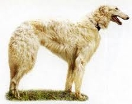

<table border="0" class="layout">
    <tbody>
        <tr>
            <td valign="top">
                <div class="holster">
                    <div class="block_container s3 b-text b-static-text user_css_12816005438" id="e_127779792857">
                        <p><em><strong>Хлоповы Татьяна и Георгий</strong></em></p>
                        <p>тел.8-926-222-94-23, 995-70-98</p>
                    </div>
                    <div class="block_container s3 b-image txt-center" id="e_128281386281"><span></span></div>
                </div>
            </td>
            <td>
                <div class="holster">
                    <div class="block_container s3 b-text b-static-text user_css_12816005438" id="e_128281383255">
                        <p style="text-align: center;"><span style="color: #006600;"><span style="color: #3366ff;"><strong>Русская Псовая Борзая</strong></span></span></p>
                        <p style="text-align: justify;"><span style="color: #006600;"><span style="color: #3366ff;"><strong>Из истории породы: </strong>название этих собак происходит от слова "борзый" - быстрый, резвый. Предки русской псовой борзой, вероятно, жили на Ближнем Востоке. Это были короткошерстные собаки, которые травили зверя, полагаясь главным образом на острое зрение. Когда они попали на север, их стали скрещивать с длинноногими и длинношёрстными местными собаками. В результате у борзой появилась столь необходимая в холодном северном климате длинная шерсть. У русской борзой много родственников "королевских кровей": в 1842 году их получила от русского царя Николая I английская королева Виктория. Позднее породой занималась королева Александра: её питомцы жили в королевском поместье Сандрингэм в Норфолке. В результате их скрещивания с местными колли была получена новая изысканная порода собак - длинношерстные колли с белоснежной шерстью и длинной, изящной мордой. В ША русские борзые впервые попали в 1889 году. Борзые - собаки необыкновенной красоты и грации, использовавшиеся с 17 века в России для охоты на волков и травли других зверей. Теперь они стали скорее модной принадлежностью.</span></span></p>
                        <p style="text-align: justify;"><span style="color: #006600;"><span style="color: #3366ff;"><strong>Общая характеристика:</strong> это величественная, добродушная собака, но несколько замкнутая, отважная и сильная. Обладает прекрасными охотничьими качествами. Спокойная, уравновешенная, агрессивная к зверю. Недоверчива к посторонним. </span></span></p>
                        <p style="text-align: justify;"><span style="color: #006600;"><span style="color: #3366ff;"><strong>Содержание и уход: </strong>борзым необходимо много места и хороший выгул, но следует помнить, что это охотничьи собаки, которым нельзя позволять резвиться вблизи домашних животных. Она требует тщательного ухода за шерстью, которую нужно ежедневно расчёсывать, для придания ей шелковистости.</span></span></p>
                        <p style="text-align: justify;"><span style="color: #006600;"><span style="color: #3366ff;"><strong>Размеры:</strong> рост 75-86 см (кобели), 68-78 см (суки). Вес 34-48 кг.</span></span></p>
                        <p style="text-align: justify;"><span style="color: #006600;"><span style="color: #3366ff;">_________________________________-</span></span></p>
                        <p style="text-align: justify;"> </p>
                    </div>
                </div>
            </td>
        </tr>
    </tbody>
</table>​
